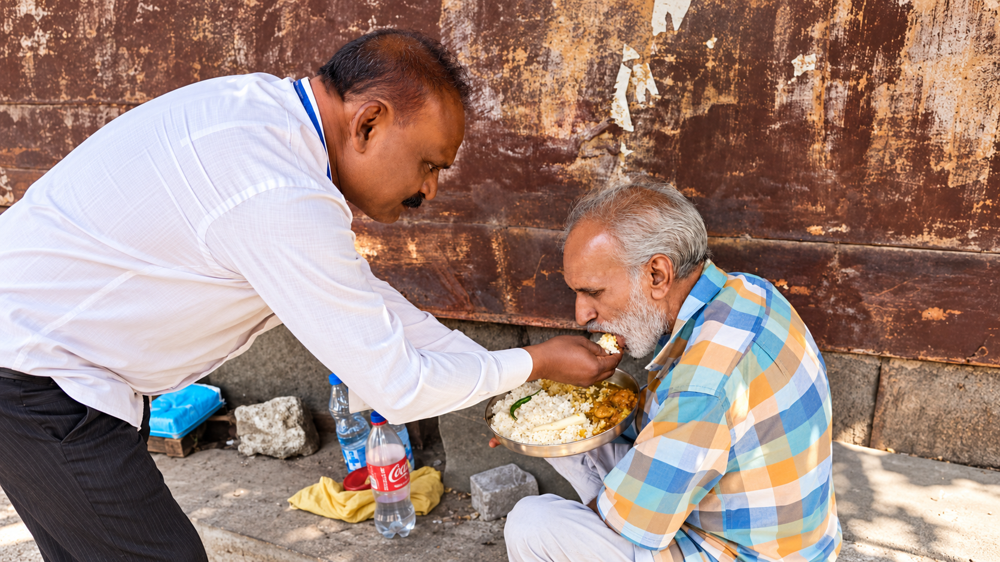

People · Care · Communities · Change
Service to Humanity is a Promise of Care.
Manav Janhit Kalyan Sansthan works for a healthier, safer and more inclusive society by supporting individuals and families through care, essential aid, education and welfare initiatives.

"Service to Humanity
is a Promise of Care."